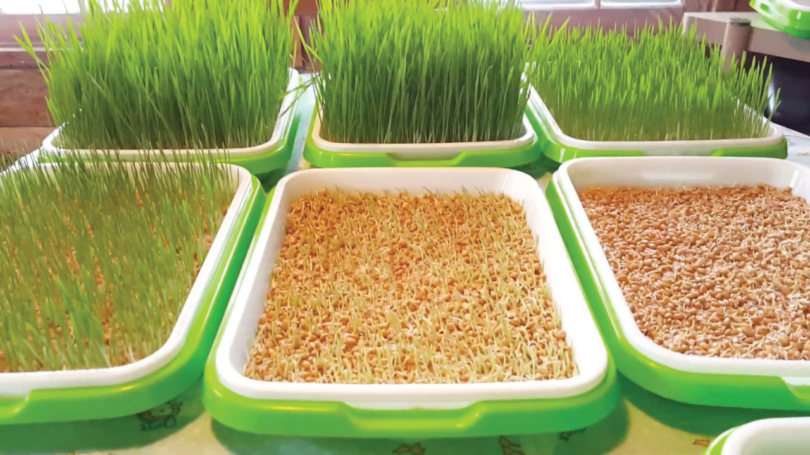

Procedures for making hydroponic fodder
(i) Choose the right seeds: Sorghum, finger millet, bulrush millet, wheat and barley are good choices. They are rich in nutrients for chickens.
(ii) Soak the seeds: Put seeds in a container such as a bucket. Fill it with water. Let it soak for 8 hours.
(iii) Drain the water: After 8 hours, drain the water from the container.
(iv) Prepare the nutrient solution: You can buy a ready-made nutrient solution from a gardening store. Alternatively, you can make your own. You will need a water-soluble fertiliser (e.g., 20-20-20 or 24-8-16 NPK), which is available from the market. Make sure you get the ones that have micronutrients included. Add approximately 10 grams of this fertiliser per litre of water and mix them very well. Add approximately 5 grams of magnesium sulphate per litre. Stir the mixture thoroughly to ensure everything is well mixed.
(v) Spread the seeds: Spread the seeds evenly on a growing tray. The tray should have small drain holes. These holes allow excess water to drain away, preventing the roots of the plants from being submerged in water. If the roots are submerged, they can’t breathe and the plants can become stressed or even die. Winnowing baskets can be used as growing trays for hydroponic fodder because they are readily available. They can be found in many places and they are a practical choice for this task.